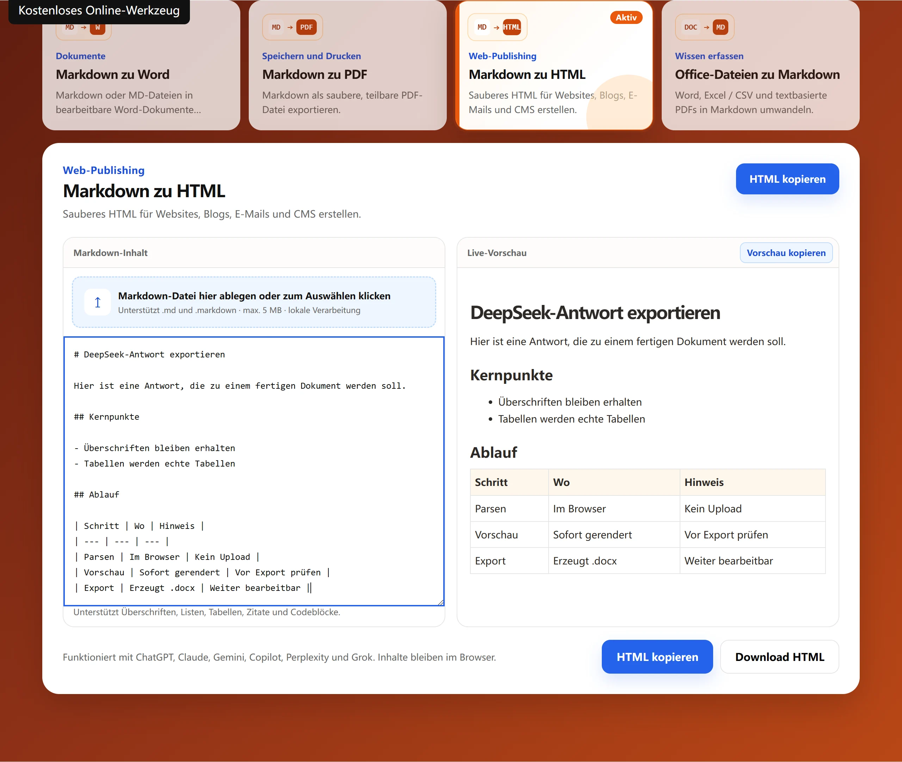

Inhalt einfügen oder hochladen
Füge Markdown ein oder lade eine MD-Datei; die Dokumentstruktur wird übernommen.
Kostenloses Online-Werkzeug
Sauberes HTML erzeugen, Code kopieren oder eine HTML-Datei herunterladen. Die Konvertierung erfolgt lokal im Browser. Deine Inhalte werden nicht hochgeladen.

So funktioniert es
Füge Markdown ein oder lade eine MD-Datei; die Dokumentstruktur wird übernommen.
Die Vorschau zeigt, wie die fertige HTML-Seite im Browser aussieht.
Exportiere eine .html-Datei zur weiteren Verwendung.
Häufige Fragen
Die Grundfunktionen sind kostenlos und ohne Anmeldung nutzbar; Inhalte verlassen den Browser nicht.
Semantisches HTML aus Überschriften, Listen, Links, Tabellen, Zitaten und Codeblöcken.
Ja. Du erhältst eine HTML-Datei, die du in dein Projekt einbinden kannst.
Nein. Die Umwandlung läuft lokal im Browser.
Einsatz
Semantische Überschriften, Listen und Tabellen passen zu den meisten Editoren.
Sauberes Markup lässt sich leichter integrieren als ein Screenshot oder ein Word-Dokument.
Die Struktur ist der Ausgangspunkt, bevor Inline-Styles dazukommen.
Die Vorschau zeigt Struktur und Textfluss, nicht die Gestaltung der Zielseite – diese entsteht erst dort.
Grenzen
Es ist kein CSS enthalten; ohne Stylesheet bleibt die Seite schlicht.
Die Ausgabe ist statisches Markup ohne Skripte oder Komponenten.
Beim Einbetten als Teilseite müssen doctype und body eventuell entfernt werden.
Weitere Werkzeuge